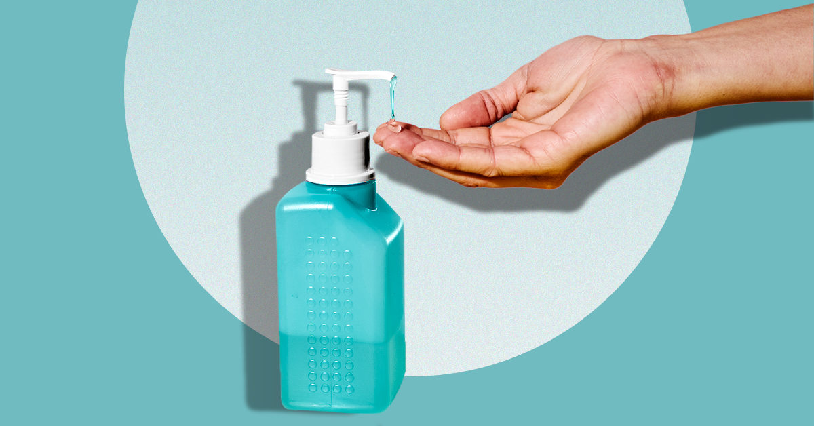
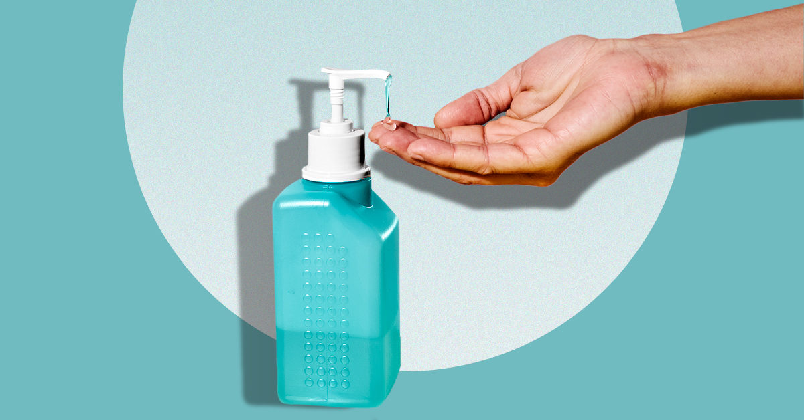

Impact of COVID-19
From the 2023 archive of class XII HTML projects. The content are based on the 2023 revisions of corresponding Wikipedia articles.

Overview
COVID-19, or coronavirus disease 2019, is a contagious disease caused by a virus, the severe acute respiratory syndrome coronavirus 2 (SARS-CoV-2). The first known case was identified at Wuhan in China in December 2019 and the disease quickly spread worldwide. The World Health Organization (WHO) declared the outbreak a public health emergency of international concern on 30 January 2020 and a pandemic on 11 March 2020. As of 27 October 2022, the pandemic had caused more than 629 million cases and 6.58 million confirmed deaths, making it one of the deadliest in history.
The pandemic has triggered severe social and economic disruption around the world, including the largest global recession since the Great Depression. Widespread supply shortages, including food shortages, were caused by supply chain disruption. Reduced human activity saw an unprecedented pollution decrease. Educational institutions and public areas were partially or fully closed in many jurisdictions, and many events were cancelled or postponed during 2020 and 2021. Misinformation has circulated through social media and mass media, and political tensions have intensified. The pandemic has raised issues of racial and geographic discrimination, health equity, and the balance between public health imperatives and individual rights.
Symptoms
Symptoms of COVID-19 are variable, ranging from undetectable to deadly, but often include fever, dry cough, headache, fatigue, breathing difficulties, loss of smell and loss of taste. Symptoms may begin one to fourteen days after exposure to the virus. At least a third of people who are infected do not develop noticeable symptoms. Of those people who develop symptoms noticeable enough to be classed as patients, most (81%) develop mild to moderate symptoms (up to mild pneumonia), while 14% develop severe symptoms (dyspnoea, hypoxia, or more than 50% lung involvement on imaging), and 5% develop critical symptoms (respiratory failure, shock, or multiorgan dysfunction). Severe illness is more likely in elderly patients and those with certain underlying medical conditions. Some people continue to experience a range of effects (long COVID) for months after recovery, and damage to organs has been observed. Multi-year studies are underway to further investigate the long-term effects of the disease.
Transmission
COVID-19 transmits when people breathe air contaminated by droplets and small airborne particles containing the virus. The risk of breathing these is highest when people are in close proximity, but they can be inhaled over longer distances, particularly indoors. Transmission can also occur if splashed or sprayed with contaminated fluids in the eyes, nose or mouth, and, rarely, via contaminated surfaces. Infected persons are typically contagious for 10 days, and can spread the virus even if they do not develop symptoms. Mutations have produced many strains (variants) with varying degrees of infectivity and virulence.
Testing
COVID-19 testing methods to detect the virus's nucleic acid include real-time reverse transcription polymerase chain reaction (rRT‑PCR), transcription-mediated amplification, and reverse transcription loop-mediated isothermal amplification (RT‑LAMP) from a nasopharyngeal swab.

 

Control strategies
Several COVID-19 vaccines have been approved and distributed in various countries, which have initiated mass vaccination campaigns. According to a June 2022 study, COVID-19 vaccines prevented an additional 14.4 to 19.8 million deaths in 185 countries and territories from 8 December 2020 to 8 December 2021.
Other recommended preventive measures include physical or social distancing, wearing masks, improving ventilation and air filtration, covering coughs and sneezes, hand washing, and keeping unwashed hands away from the face and quarantining those who have been exposed or are symptomatic. The use of face masks or coverings has been recommended in public settings to minimise the risk of transmission. While work is underway to develop drugs that inhibit the virus, the primary treatment is symptomatic. Treatments include novel antiviral drugs and symptom control. Public health mitigation measures include travel restrictions, lockdowns, business restrictions and closures, workplace hazard controls, quarantines, testing systems, and tracing contacts of the infected.